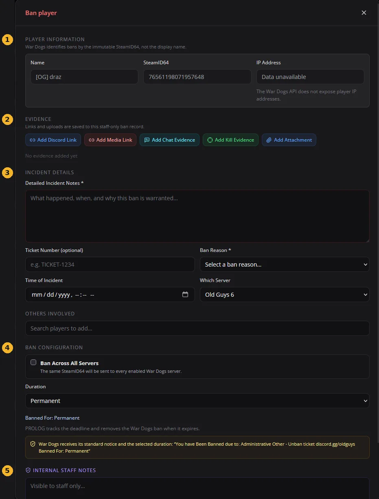
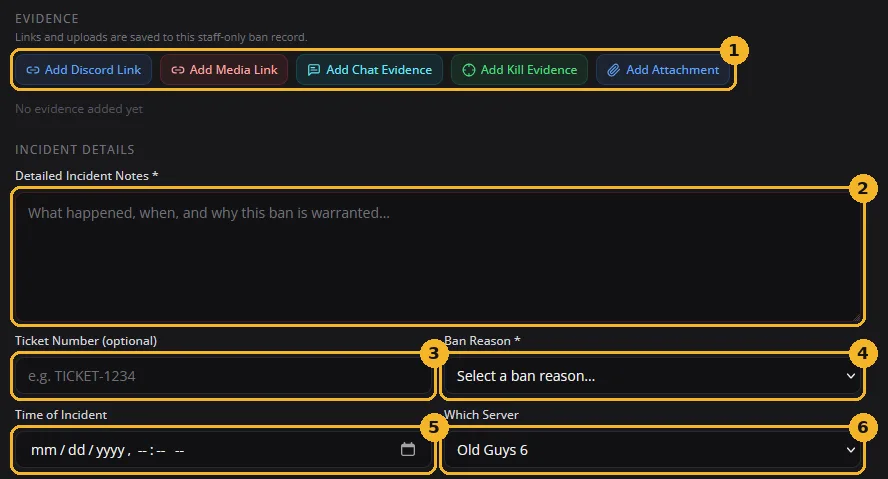
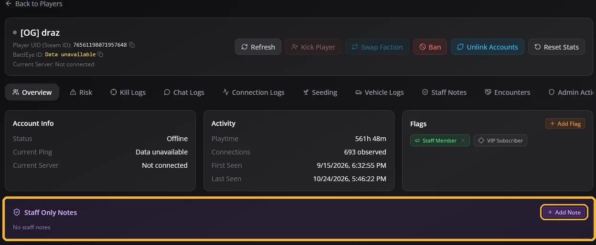
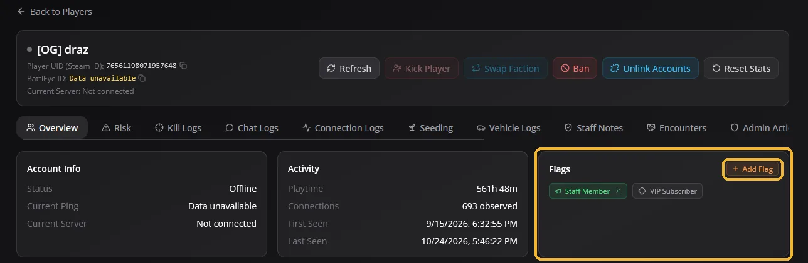

Every time you take action
Kick, ban, warning or message, it's the same three steps each time.
- Get proof firstA clip, screenshot or server log. No proof, no ban.
- Follow the ladderLook up the offense in the punishment table and give the step that matches how many times they've done it.
- Write it downLog it in PROLOG (ban page or Staff Notes) and post bans with proof and the player's ID in the Discord EVIDENCE channel.
Useful links
The sites you'll use most. Each one opens in a new tab.
Sr. Staff + only These links are for Sr. Staff and above. Trial Staff and Staff won't have access.
Chain of command
Who's who, top to bottom. If you're not sure who to go to, ask the level directly above you.
Owner
Owns the Old Guys 2.0 Network. Handles server hosting, maintenance, financial decisions and policy oversight.
El Presidente
Head of operations. Makes final gameplay decisions and shapes the direction of the community.
Admin
Back-end administrators. Handle server maintenance and staff oversight, and make sure all Old Guys standards are met.
Community Manager
The staff team's HR rep. Has full staff oversight and removal authority, handles staff concerns, and makes sure Old Guys standards are met.
Sr. Staff
Staff leaders trusted for good decision-making. Train other staff and run day-to-day operations for the team.
Staff
Know all the server rules and are skilled at tickets. Handle most in-game issues and answer and resolve tickets.
Trial Staff
New members of the staff team. Learn the rules inside and out, take part in training, and answer simpler tickets.
Who do I report to?
- Trial Staff → Sr. Staff or Staff
- Staff → Sr. Staff
- Sr. Staff → the Admin team, for problems and any back-end or policy changes
- Admin and El Presidente → the Owner
Admin code of conduct
This is a high-responsibility role. The same expectations apply to every staff member.
Stay impartial
Treat every player the same, no matter if they're your friend or what clan or community they belong to.
Gather evidence
Always get recordings, screenshots or server logs before a ban, kick or any permanent action.
Escalate responsibly
Stick to the punishment steps. Only skip ahead when the offense clearly calls for immediate severe action.
Document everything
Every ban goes in the Discord EVIDENCE channel with the player's ID and proof, plus a note in the Staff Notes section in PROLOG.
Accountability
- You represent the staff team everywhere now: every channel, server and thread.
- Follow the server rules and stay professional in every interaction.
- Handle disputes with maturity and no favoritism. If you're personally involved, hand it to a staff member who isn't.
- Keep all internal staff discussions private, including any action taken.
Transparency
- Log every action properly so records are easy to find if there's a dispute.
- Tickets that involve a staff member are handled by Admin only.
- Ban appeals are handled by Sr. Staff or above only, and never by someone involved.
- Never discuss disputes, tickets or staff decisions in public channels or in-game chat. Move them to a ticket.
- Dealing with a difficult player? You can always bring in other staff, ask for input, or ask a superior to show you how to handle it.
You're here to
- Enforce the rules
- Keep the community safe
- Act like the respected community member you now are
- Ask admins or senior staff when unsure
You're not here to
- Start fights with players in game
- Tell people how to play because you want it done your way
- Stop someone from playing their style. If they want to fobbit, let them fobbit. If they want to push zone, let them push zone.
Why it matters: people play this game how they want, and we have different servers for a reason. Staff caught directing how others play will be warned. Repeat offenders are removed from the staff team.
Punishment table
Find the offense, then read left to right. First time gets the first step, second time the next one, and so on.
- 1st24-hour ban
- 2nd7-day ban
- 3rdPerm ban
- 1stPerm ban
- 1stWarning
- 2ndKick
- 3rd24-hour ban
- 4thPerm ban
- 1stWarning
- 2nd24-hour ban
- 3rd7-day ban
- 4thPerm ban
- 1stWarning
- 2ndKick
- 3rd24-hour ban
- 4thPerm ban
- 1stWarning
- 2ndKick
- 3rd24-hour ban
- 4thPerm ban
- 1stWarning or kick
- 2nd24-hour ban
- 3rd7-day ban
- 4thPerm ban
- 1stWarning
- 2ndKick
- 3rd24-hour ban
- 4th7-day ban
- 1stPerm ban
Every action still needs proof
Whatever you pick from this table, you still need evidence and a detailed reason written down.
Zero-tolerance offenses
These skip the usual warnings and go straight to severe action.
Racism & hate speech
Covers voice chat, text chat, player names and clan tags. Blatant racism (the hard "R") is an instant 24-hour ban, then follow the ladder. Homophobic slurs used as casual in-game banter are tolerated, but excessive use, or using them to threaten a player, is treated as hate speech.
Hacking / third-party scripts
Any unauthorized software: aimbots, wallhacks or unapproved macros.
Doxing / real-life threats
Threatening players or sharing anyone's personal information (PII).
Discord tickets & ban appeals
Answering a ticket
Keep it professional. Don't tell the person who reported it what action was taken. Say something like:
If they want more explanation, use your judgment. Some players do appreciate more detail.
Don't message the punished player
Let them open a ticket or come to us. If you type the reason into PROLOG, they'll see it when they're kicked or banned.
How appeals work
- The player opens a ticket in the Wardogs Discord within 14 days of the ban.
- A Sr. Staff member or above who was not involved in the original ban reviews it.
- If asked, the staff member who issued the ban must provide the proof (clips or log files).
Ticket about a staff member? Those go to Admin only.
Using PROLOG
PROLOG is our custom RCON tool. If you haven't been trained on it yet, ping an admin or senior staff member to get set up.
We log everything you do.
Every click and every refresh is recorded, and we will see it. This is a powerful tool. Use it responsibly and don't abuse it.
Issuing a ban
Open the ban page from the drop-down on the server player list, or with the red Ban button at the top of the full player profile. We need clear evidence, clips and a reasonably detailed reason. This is what we check if the player appeals.
The ban page is split into five parts, top to bottom:
- Player information. Filled in for you. Bans are tied to the SteamID64, not the display name.
- Evidence. Add your clips, links and screenshots here.
- Incident details. What happened and why (see the next picture).
- Ban configuration. Pick the duration. Tick Ban Across All Servers to ban them everywhere.
- Internal staff notes. Anything extra for other staff. Players never see this.

Filling in the ban form
- Evidence buttons. Add Discord links, media clips, chat or kill evidence, or attachments. Add as much as you reasonably can.
- Detailed Incident Notes. A short summary of what happened, when, and why the ban is warranted.
- Ticket Number. Only if there's a related Discord ticket.
- Ban Reason. Pick the matching reason from the list.
- Time of Incident. When the violation happened, not when you're issuing the ban.
- Which Server. Usually choose the all servers option.

Adding evidence: where to get the link
Medal clip: use Add Media Link and paste the clip link.
Clip or screenshot sent in Discord: right-click it, choose Copy media, then paste it with Add Discord Link.
Staff Notes
Every action in PROLOG needs a reason written down, including kicks, messages and flags. Those don't have an evidence box, so open the player's profile and use Add Note in the purple Staff Only Notes box.
Not every kick needs proof, it's your call, but always write a short reason. This stops two people kicking the same player for the same thing.

Adding flags
You can flag player accounts. On the player's profile, find Flags on the right and click the orange + Add Flag button. Pick a flag that matches the action you took.

Spotting cheaters
This is hard in Wardogs. A player doing well is not proof of cheating. Do as much research as you can before you ban, so we don't ban good players.
Tool we use: check the player's Steam account on cheatercheck.io. There are other sites, but this is our main one.
Red flags
- Private profile and Steam level 0, and clearly suspicious (for example 1 hour on our server with 30+ kills in a short time). This may warrant a ban.
- Lots of negative "-rep" comments on their Steam profile. Many hijacked accounts are used for cheating.
Needs a PC check
- A VAC ban within the last 100 days.
- Two or more game bans within the last 100 days.
Probably just good
- Lots of games, no bans, high Steam level, and many hours played in other games.
Always check in PROLOG too
Look at their playtime, average kills and headshots. Again, great stats on their own don't mean someone is cheating.
Copy & paste messages
Ready-made messages. Tap Copy, then paste.
Wardogs Update: FYI - Wardogs is going down in ~5mins for a patch. Est downtime around 15 mins - please re join when the servers are back online to help re-populate! Kits will be refunded.
!!! SEEDING OG # !!! First 20 in get the @WardogsSeeder role of course and/or entry into the raffle and tokens to claim VIP time! Be sure to screenshot yourself and open a ticket to claim! @here
Stuck? Ask.
If you have questions or aren't sure how to do something, ping our admins or senior staff. We're here to help.